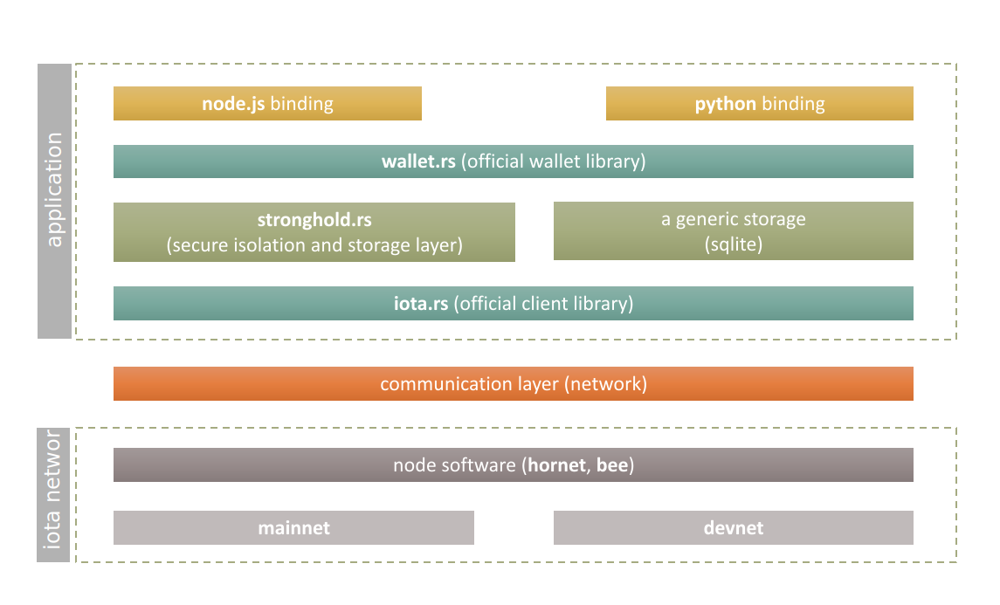
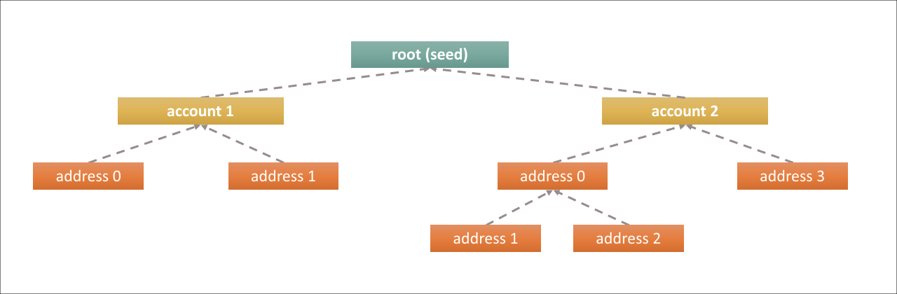

Exchange guide
The IOTA wallet library
Easily integrate IOTA with your exchange, custody solution, or product.
IOTA is built on an architecture that was designed to be the backbone of the Internet of Things (IoT) environment of the future. But this architecture has made it more challenging for service providers like exchanges to integrate IOTA compared to traditional blockchain-based distributed ledgers.
Within the Chrysalis update (also known as IOTA 1.5), some building blocks have been changed to be more approachable and more aligned with currently leveraged standards. We also ship many client libraries to help developers implement IOTA into their applications: 
How do I implement it to my exchange?
In wallet.rs, we use an account model so you can create an account for each of your users. Another approach would be to use one account and generate multiple addresses, which you can then link to the users in your database. The wallet library is designed to be as flexible as possible to back up any of your use cases.
Since IOTA addresses in the Chrysalis network are perfectly reusable, they can be mapped to your users in a clear and concise way:
- Create an account for every user ->
Multi Accountapproach - Create one account with many addresses ->
Single accountapproach
The library supports derivation for multiple accounts from a single seed. An account is simply a deterministic identifier from which multiple addresses can be further derived.
The library also allows consumers to assign a meaningful alias to each account. In addition to this, generated individual accounts can be also searched via generated addresses. This means it does not matter whether aliases or addresses are known as the search for the related account is very straightforward using the wallet.rs library.
It also leaves the choice to users if they want to segregate their funds across multiple accounts or multiple addresses. The following illustration outlines the relationships between seed, accounts, and addresses:

Multi account approach
The multi account approach is used to create an account for each individual user. The created accounts can then be linked to the internal user IDs as an account alias, which are distinctly separated.
Single account approach
The single account approach allows for just one account and creates addresses for each individual user. The associated addresses are then linked to the internal user IDs and store who owns which address in the database. Most exchanges are more familiar with the single account approach and find it easier to use, implement, and backup.
Implementation guide
This guide explains how to use the IOTA Wallet Library to successfully implement IOTA into an exchange. If you already implemented the IOTA Hub, please visit the Hub Migration Guide.
Features of the Wallet Library:
- Secure seed management
- Account management (with multiple accounts and multiple addresses)
- Confirmation monitoring
- Deposit address monitoring
- Backup and restore functionality
How does it work?
The Wallet Library is a stateful package with a standardized interface for developers to build applications involving IOTA value transactions. It offers abstractions to handle IOTA payments and can optionally interact with the IOTA Stronghold for seed handling, seed storage, and state backup. Alternatively, you can use a SQLite database; however, using the Stronghold component is highly recommended due to the most advanced level of security being applied.
For reference, you can see the full documentation here.
The following examples cover the multi account approach using NodeJS binding:
- Setup the Wallet Library
- Create an account for each user
- Generate a user address for deposits
- Listen to events
- Check the user balance
- Enable withdrawals
Note: If you are looking for other languages, please read the wallet library overview.
Since all wallet.rs bindings are based on core principles provided by the wallet.rs library, the outlined approach is very similar regardless of the programming language of your choice.
1. Setup the Wallet library
First, let's install the components that are needed to use wallet.rs and the binding of your choice; it may vary a bit from language to language. In the case of the NodeJs binding, it is quite straightforward since it is distributed via the npm package manager. We also recommend you use dotenv for password management.
For reference, read more about backup and security here.
npm install @iota/wallet dotenv
touch .env
Then, input your password to the .env file like this:
SH_PASSWORD="here is your super secure password"
Once you have everything needed to use the wallet.rs library, it is necessary to initialize the AccountManager instance which creates (opens) a secure storage for individual accounts (backed up by Stronghold by default).
The storage is encrypted at rest, so you need a strong password and location where to put your storage.
Note: manage your password with the utmost care.
Technically speaking, "storage" means a single file called wallet.stronghold. It is also needed to generate a seed (mnemonic) that serves as a cryptographic key from which all accounts and related addresses are generated.
One of the key principles behind the stronghold-based storage is that no one can get a seed from the storage. You deal with all the accounts purely via the Account_Manager instance where all complexities are hidden under the hood and are dealt with in a secure way. In case you would also like to store a seed somewhere else, there is another method, AccountManager.generateMnemonic(), that generates random seeds. This method can be leveraged before the actual account initialization.
Note that it is highly recommended to store the stronghold password and the stronghold database on separate devices. Please refer to the backup and security guide for more information.
Import the Wallet Library and create an account manager:
const { AccountManager, SignerType } = require('@iota/wallet')
// Setup IOTA Wallet Library
const manager = new AccountManager({
storagePath: './storage'
})
manager.setStrongholdPassword(process.env.SH_PASSWORD)
manager.storeMnemonic(SignerType.Stronghold, manager.generateMnemonic()) // seed generation
Once the stronghold storage is created, it is not needed to generate the seed any longer (manager.storeMnemonic(SignerType.Stronghold, manager.generateMnemonic())). It has been already saved in the storage together with all account information.
2. Create an account for an user
Once the backend storage is created, individual accounts for individual users can be created:
let account = await manager.createAccount({
alias: user_id, // an unique id from your existing user
clientOptions: { node: 'http://api.lb-0.testnet.chrysalis2.com', localPow: false }
})
Each account is related to a specific IOTA network (mainnet/devnet) which is referenced by a node property, such as node url (in this example, the Chrysalis testnet balancer).
For more information about clientOptions, please refer to Wallet NodeJs API Reference.
The Alias can be whatever fits to the given use case and should be unique. The alias is usually used to identify the given account later on. Each account is also represented by an index which is incremented (by 1) every time a new account is created. Any account can be then referred to via index, alias, or one of its generated addresses.
Once an account has been created, you get an instance of it using the following methods: AccountManager.getAccount(accountId), AccountManager.getAccountByAlias(alias) or AccountManager.getAccounts().
The most common methods of account instance include:
account.alias()- returns an alias of the given accountaccount.listAddresses()- returns list of addresses related to the accountaccount.getUnusedAddress()- returns a first unused addressaccount.generateAddress()- generate a new address for the address index incremented by 1account.balance()- returns the balance for the given accountaccount.sync()- sync the account information with the tangle
3. Generate a user address to deposit funds
Wallet.rs is a stateful library which means it caches all relevant information in storage to provide performance benefits while dealing with, potentially, many accounts/addresses.
Note: sync the account info with the network during the wallet manipulation to be sure the storage reflects an actual state of the ledger (network).
Every account can own multiple addresses. Addresses are represented by an index which is incremented (by 1) every time a new address is created. The latest address is accessible via account.latestAddress():
// Always sync before account interactions
console.log('syncing...')
const synced = await account.sync()
console.log('synced!')
// By design, the last address of each account is an unused address which can be used as deposit address
const latestAddress = account.latestAddress()
console.log('Need a refill? Send it to this address:', latestAddress)
Feel free to fill the address with Testnet Tokens with the IOTA Faucet to test it.
Addresses are of two types, internal and public (external):
- Each set of addresses are independent from each other and has an independent
indexid - Addresses that are created by
account.generateAddress()are indicated asinternal=false(public) - Internal addresses (
internal=true) are calledchangeaddresses and are used to send the excess funds to them - The approach is also known as a BIP32 Hierarchical Deterministic wallet (HD Wallet)
Note: You may remember IOTA 1.0 network in which addresses were not reusable. It is no longer true and addresses can be reused multiple times in IOTA 1.5 (Chrysalis) network.
4. Listen to events
The Wallet.rs library supports several events for listening. As soon as the given event occurs, a provided callback is triggered.
Below is an example of fetching existing accounts and listening to transaction events coming into the account:
const { addEventListener } = require('@iota/wallet')
const callback = function(err, data) {
if(err) console.log("err:", err)
console.log("data:", data)
}
//Adds a new event listener with a callback in the form of (err, data) => {}. Supported event names:
addEventListener("BalanceChange", callback)
// Possible Event Types:
//
// ErrorThrown
// BalanceChange
// NewTransaction
// ConfirmationStateChange
// Reattachment
// Broadcast
Example output:
data: {
accountId: 'wallet-account://1666fc60fc95534090728a345cc5a861301428f68a237bea2b5ba0c844988566',
address: {
address: 'atoi1q9c6r2ek5w2yz54en78m8dxwl4qmwd7gmh9u0krm45p8txxyhtfry6apvwj',
balance: 20000000,
keyIndex: 0,
internal: false,
outputs: [ [Object], [Object] ]
},
balance: 20000000
}
accountId can then be used to identify the given account via AccountManager.getAccount(accountId).
For reference, you can read more about events in the API reference.
5. Check the account balance
Get the available account balance across all addresses of the given account:
// Always sync before account interactions
console.log('syncing...')
const synced = await account.sync()
console.log('synced!')
let balance = account.balance().available
console.log('available balance', balance)
6. Enable withdrawals
Sending tokens is performed via the SyncedAccount instance that is a result of the account.sync() function:
console.log('syncing...')
const synced = await account.sync()
console.log('available balance', account.balance().available)
const address = 'atoi1qykf7rrdjzhgynfkw6z7360avhaaywf5a4vtyvvk6a06gcv5y7sksu7n5cs'
// TODO: Check if address is valid.
const amount = 1000000 // Amount in IOTA: 1000000 == 1 MIOTA
const node_response = await synced.send(
address,
amount
)
console.log("Check your message on https://explorer.iota.org/chrysalis/message/", node_response.id)
The full function signature is SyncedAccount.send(address, amount[, options]).
Default options are perfectly fine and get the job done; however, additional options can be provided, such as remainderValueStrategy:
changeAddress: Send the remainder value to an internal addressreuseAddress: Send the remainder value back to its original address
The SyncedAccount.send() function returns a wallet message that fully describes the given transaction. The messageId can be used later for checking a confirmation status. Individual messages related to the given account can be obtained via account.listMessages() function.
Please note that when sending tokens, a dust protection mechanism should be considered.